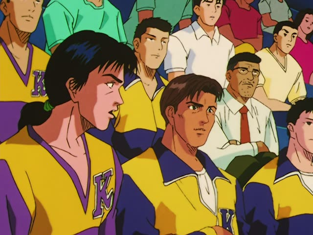
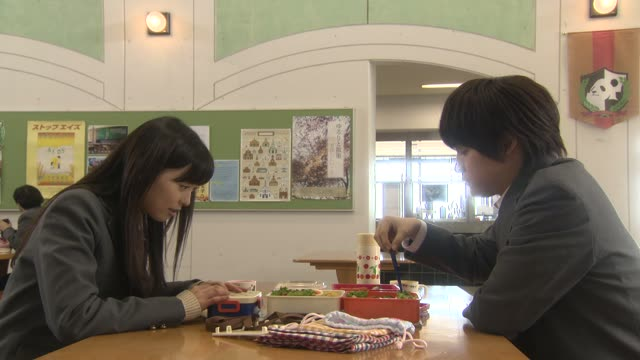
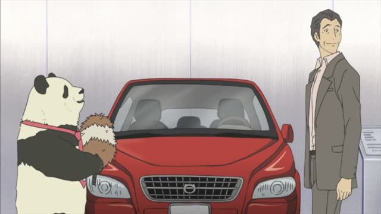
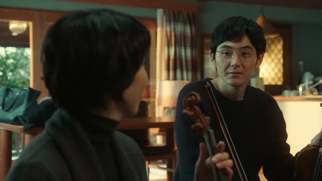
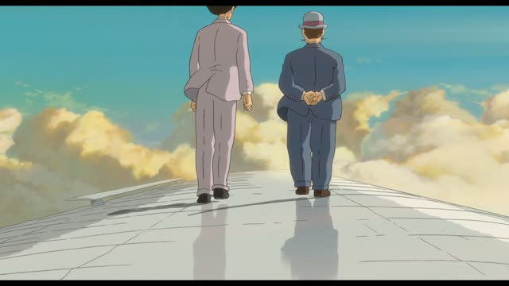
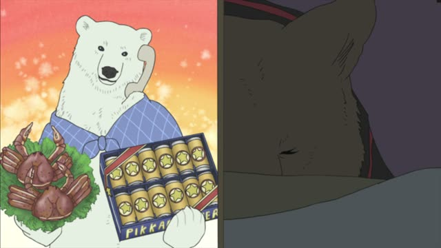
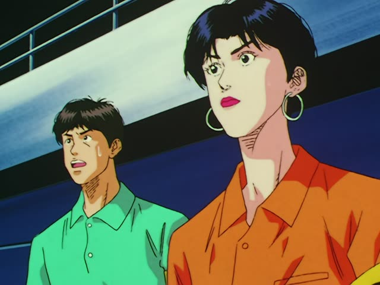

AとBとどちらが

Slam Dunk · Episode 79
地力では、どっちが上ですかね、牧さん。
"In raw strength, which one is better, Maki-san?" [of the two teams]
To ask which of two is more, name both with と, then ask どちらが (polite) or どっちが (casual) + the adjective: AとBと、どちらが高いですか？ "Which is more expensive, A or B?". The second と is often dropped.
On this card, someone asks Maki which of the two teams is stronger. The teams were just named, so only どっちが is left. ですか makes it polite.
To answer, use より and の方: Aより、Bの方が高いです, "B is more expensive than A".

Good Morning Call · Episode 9
チョコとチョコレートケーキ、どっちが好き？
"Which do you like better, chocolate or chocolate cake?"
On this card, Nao is trying to pick a present for Uehara without saying so. Both things come first with と, then どっちが好き？
Quick Examples
At a café, a waiter asks you.
コーヒーと紅茶と、どちらがいいですか？
"Which would you like, coffee or tea?"
Polite: どちら.
PoliteAsking a friend about getting downtown.
バスと電車、どっちが早い？
"Which is faster, the bus or the train?"
The second と dropped: very common.
CasualAnswering the question above.
電車の方が早いよ。
"The train is faster."
Answer with の方が. No どっち in the answer.
CasualAsking your teacher about two words.
「大切」と「大事」と、どちらがよく使われますか？
"Which is used more, 大切 or 大事?"
PoliteWith and without
どれが好き？
"Which one do you like?" Out of three or more.
犬と猫、どっちが好き？
"Which do you like better, dogs or cats?" Just two to pick from.
Examples from Media

Shirokuma Cafe · Episode 29
どっちが聞きたいですか。
"Which one do you want to hear about?"
Pandas or bamboo: the two choices came just before.

Quartet · Episode 1
夫さん、どっち派ですか？唐揚げにレモン。
"Which side is your husband on? Lemon on fried chicken."
どっち派 = which side are you on: lemon or no lemon.
Vinland Saga · Episode 11
どっちが偉いと思いますかね？
"Which do you think is greater?"
The two were named just before: Jesus or the Norse gods.
Princess Mononoke
シシ神の首とタタラ場と、どちらが大切なのだ。
"Which matters more, the Forest Spirit's head or Irontown?"
The full pattern, both と included.

The Wind Rises
ピラミッドのない世界と、どちらが好きかね。
"...or a world without pyramids. Which do you prefer?"
The first choice (a world with pyramids) came just before.
Death Note · Episode 28
ね～月、どっちがいい？
"Hey Light, which one is better?"
She can't decide between two things.

Shirokuma Cafe · Episode 36
ビールとタラバガニ、どっちがいいと思う？
"Beer or king crab, which do you think is better?"
Asking for gift advice. どっちが + いいと思う: asking for an opinion.

Slam Dunk · Episode 53
どっちが上なんだ？
"Who's better?"
Rukawa against Kiyota: two players, so どっち.